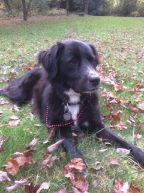

My Pets
Meet the Boys!
Paco

My family got Paco about eight years ago and he’s around 13 years old. We found him on Craigslist where his previous family was moving and didn’t want him anymore so my mother had to save him. He’s clinically overweight and not that smart but we love him anyway. We often refer to him as our "broken old man" due to his messed up tailbone that makes him sit funny and hop up stairs with his back legs together. Here is a website about broken cats like Paco.
Cooper

- Large
- Only smells bad some of the time
- Happy
- Likes giving kisses
Cooper is our dog who we rescued from the Greenville Pound two years ago. My mother doesn’t like dogs so it took my dad years to convince her but now we all love him. His favorite things to do are eat the cat’s food, dig holes in the yard, and bork at friends and family.
Finn

- Fish
- It's a fish
- Red
- Fish don't really do that much...
Finn is our fish and the least important member of our family. We got Finn at Petsmart a little over a year ago. He is my brother’s fish and I rarely see or care about him. Finn is short for Phineas which was most probably inspired by Phineas and Ferb. I think it’s pretty silly to keep a fish as a pet as it doesn’t even know you exist if it’s not actively staring at you. But I don’t pick favorites, I swear.